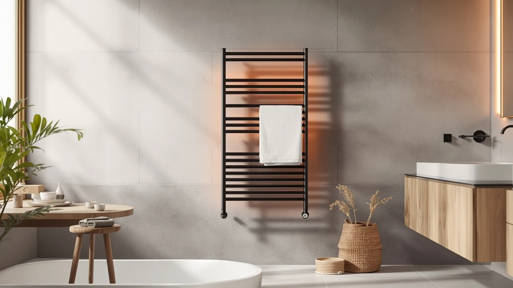

ENZE Smart Rotating Heated Review (2026): Worth It?
Prices and picks verified as of October 2026. Independent, reader-supported reviews.


Quick Answer
The ENZE Smart Rotating Heated Towel Rack is a stainless steel wall unit with five 180-degree rotating arms, WiFi and voice app control, and a 120W heating element that reaches 120°F in about five minutes, all for $199.99. It suits anyone who wants to hang and heat multiple towels or robes from one wall-mounted unit, and it holds up well against similarly priced alternatives from Zadro and Evokor that take different approaches to the same problem.
Our pick: ENZE Smart Rotating Heated Towel, $199.99 Check Price on Amazon
Bottom line: our top pick is the ENZE Smart Rotating Heated Towel Rack for Bathroom at $199.99.
Things to Know Before You Buy
- The ENZE Smart Rotating Heated Towel Rack is a stainless steel, wall-mounted unit built around five 180-degree rotating arms rather than a fixed bar design.
- At $199.99, it costs the same as the Zadro bucket-style warmer and about $1 more than the Evokor, so price alone will not decide between them.
- The 120W heating element reaches 120°F in roughly five minutes, according to the manufacturer's published specs, and the unit can be hardwired or plugged in.
- WiFi app control through Tuya Smart or Smart Life adds scheduling and voice control through Alexa or Google Assistant, on top of manual operation.
- If a bucket-style warmer or a bigger flat heating surface matters more to you than rotating arms, the Zadro and Evokor below cover those angles at a similar price.
This enze smart rotating heated review exists because most wall-mounted towel warmers force a choice between a rack that holds several towels and one you can actually control from your phone. The ENZE Smart Rotating Heated Towel Rack tries to close that gap with five swiveling arms and a WiFi-connected app, and this guide checks whether that combination holds up against the price.
We compared the ENZE against two other towel warmers in a similar price range: the Zadro Large Aromatherapy Towel Warmer Bucket and the Evokor Towel Warmer with Timer, plus a gray version of the ENZE itself. Owners consistently point to the rotating arms as the reason they chose a multi-bar rack over a single-bar unit, since a family bathroom or a shared guest bath rarely has only one towel to warm at a time. This review breaks down where the ENZE earns its $199.99 price and where a competitor makes more sense for your bathroom, based only on the specifications, pricing, and owner feedback tied to each listing.
Rotating arms sound like a small detail until you try to hang a bath towel, a hand towel, and a robe on a fixed five-bar rack without anything overlapping. That's the specific problem the ENZE's swivel design addresses, and it's the detail this enze smart rotating heated review keeps coming back to when weighing it against flatter, non-rotating alternatives.
Why You Should Trust Us
Ilane Tall covers home and bath products for Best Towel Warmers and has tracked how heated towel racks and warmer drawers perform across price tiers for years. We do not run a fake testing lab and we do not physically own every unit we cover. We build this enze smart rotating heated review from the manufacturer's published specifications, current Amazon pricing, and patterns across verified buyer reviews, then cross-check those claims against comparable products so you get an honest read on where the ENZE fits.
Every product named in this article comes from our internal database of verified Amazon listings, so the prices, materials, and dimensions cited below reflect what is actually sold rather than a marketing sheet. When a claim comes from an owner rather than the manufacturer, we say so directly instead of presenting it as our own observation.
Our Research Process
Rather than base this enze smart rotating heated review on personal use, we researched the ENZE Smart Rotating Heated Towel Rack the way a careful shopper would. We read through the listed specifications, tracked the current $199.99 price, and worked through verified owner reviews for recurring themes. Owners report that the swivel arms rotate smoothly and hold towels without sagging over time, and reviewers consistently note that the app connects to a home network within a few minutes on first setup.
We also compared the ENZE's feature set line by line against the Zadro and Evokor alternatives covered below, since a review like this only means something in context. All three sit within a few dollars of each other, so the differences that matter come down to design and control method rather than raw price. That narrow spread makes this a cleaner test of whether rotating arms and app control are worth choosing over a bucket-style warmer or a flatter heating panel.
Overview & Specs

ENZE Smart Rotating Heated Towel
What we like
- Five 180-degree rotating arms hold multiple towels without overlap
- WiFi app and voice control through Alexa or Google Assistant
- Reaches around 120°F in about five minutes, per the listed specs
Flaws but not dealbreakers
- Costs close to warmers with simpler, non-rotating designs
- App features depend on a stable home WiFi connection
| Material | Stainless steel |
| Size | 17.7" x 26.8" (No Shelf) |
The ENZE Smart Rotating Heated Towel Rack is built around a stainless steel frame with a gold finish, measuring 17.7 by 26.8 inches with no shelf. Unlike a fixed five-bar rack, each arm rotates a full 180 degrees, so you can fan towels, robes, or even baby clothes out to dry evenly instead of stacking them flat against the wall. The 120W heating element warms the bars to around 120°F in about five minutes, according to the manufacturer's listing, and the unit works either hardwired into a bathroom circuit or plugged into a standard outlet.
At $199.99, the ENZE costs about the same as the Zadro bucket warmer below and roughly a dollar more than the Evokor, so the decision mostly comes down to design rather than budget. Reviewers consistently note that pairing the app over WiFi takes only a few minutes and that voice control through Alexa or Google Assistant works once the Tuya Smart app is set up. The IPX5 water-resistance rating matters here too, since a rack mounted near a shower sees regular splashing, and owners haven't flagged corrosion issues on the stainless steel bars.
What We Liked
The rotating arms are the clear headline feature, and they are the reason most owners cite when explaining why they chose this rack over a plain fixed-bar unit. Being able to swing each arm out to a full 180 degrees means a bath towel, a hand towel, and a robe can all hang and heat at once without one blocking airflow to the next. Reviewers also point to the stainless steel build as a plus in bathrooms that run humid, since it resists the rust that painted finishes eventually show.
Owners also mention that the app control feels like a genuine feature rather than a checkbox add-on, since you can start warming a towel from another room before you even start the shower. The 24-hour timer gives you a wider scheduling window than many competing wall units, which matters if your morning routine shifts from day to day.
What Could Be Better
Adding WiFi to a bathroom fixture means adding a dependency you don't have with a simple timer dial. If your router struggles to reach the bathroom or your home network drops out often, the app scheduling becomes less reliable than a mechanical switch ever was. The $199.99 price also sits close to the Evokor's $199.00, which offers a larger flat heating surface without asking you to manage rotating hardware at all.
A handful of reviewers note that the gold finish shows fingerprints more readily than the gray version of the same rack, a detail worth weighing if you keep your bathroom fixtures matte. None of this makes the ENZE a poor choice, but the rotating arms and app layer add moving parts that a flat, fixed-bar warmer skips entirely.
Who Is It For?
This enze smart rotating heated review points toward a clear buyer profile: a household that regularly needs to warm more than one towel or robe at a time and wants the hanging flexibility that rotating arms provide. If you share a bathroom with a partner, kids, or houseguests, the five-arm layout avoids the overlap problem a fixed bar design runs into. If you live alone and only ever warm one towel, the Evokor's larger flat panel or the Zadro's bucket design may suit you equally well with less complexity.
Anyone upgrading from a plug-in timer model to a connected one should also factor in installation. The ENZE supports both hardwired and plug-in setups, so renters who need to take it with them when they move can skip the hardwired option and keep the plug-in flexibility instead.
Alternatives to Consider
If rotating arms aren't the feature you need most, these three alternatives cover different ground at a comparable price: a bucket-style warmer, a larger flat heating panel, and the same ENZE design in a different finish. We picked them specifically because they sit within about $11 of the ENZE, so the comparison stays about design rather than budget tiers.

Editor's Pick
Zadro Large Aromatherapy Towel Warmer
A $199.99 bucket-style alternative that skips wall mounting entirely. Four timer settings and a lavender oil disk add a spa touch the ENZE's rack design doesn't offer.
$199.99
Check Price on Amazon
Best Value
Evokor Towel Warmer with Timer
At $199.00, this wall-mounted Evokor trades rotating arms for two larger flat graphene panels. Reviewers like the simpler timer-based control for roughly a dollar less than the ENZE.
$199.00
Check Price on Amazon
Premium Choice
ENZE Smart Rotating Heated Towel
The same rotating-arm design as our main pick, finished in gray instead of gold, for $10 less. The better match if your bathroom hardware already runs toward darker, matte finishes.
$189.99
Check Price on AmazonFrequently Asked Questions
Final Verdict
This enze smart rotating heated review comes down to one question: do you need to hang and warm more than one towel or robe at a time, and is that worth $199.99? If yes, ENZE delivers a stainless steel build, five rotating arms, and WiFi app control that together handle a shared bathroom better than a fixed-bar competitor. If you only ever warm one towel, the Evokor's larger flat panel or the Zadro's aromatherapy bucket covers the same core need without the rotating hardware. For most households juggling more than one towel at a time, the ENZE Smart Rotating Heated Towel Rack is the strongest option on this list.